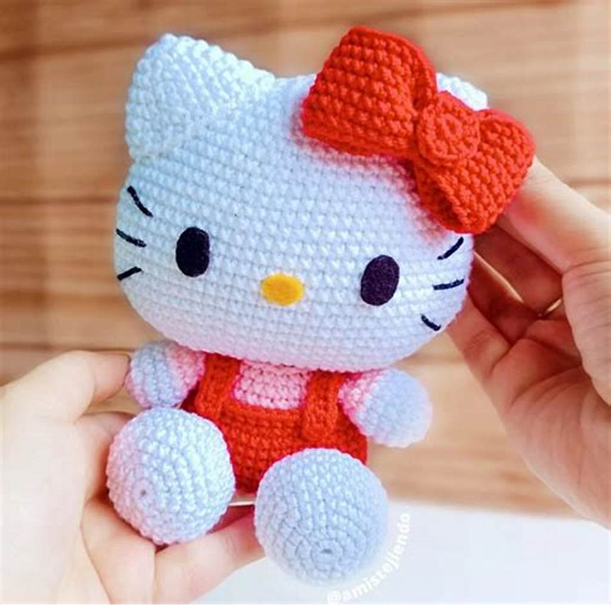
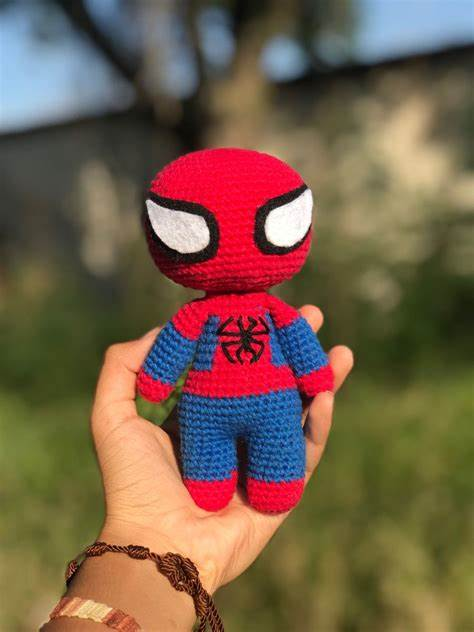
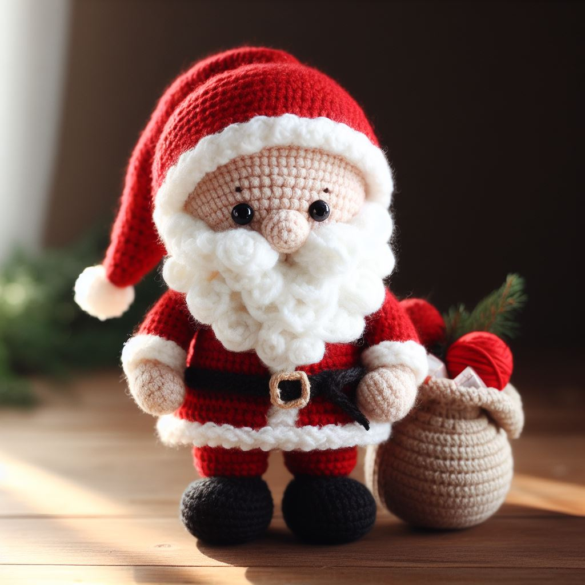

¿Qué son los Amigurumis?
Los amigurumis son muñecos tejidos a crochet, puedes encontrar un amigurumi de cualquier cosa que puedas imaginar. Son muñequitos realizados con mucho amor y dedicación, cada uno es muy especial.
Galería de Amigurumis
Conoce algunos de los amigurumis más tiernos:



Tutoriales para Crear Amigurumis
Si a ti, al igual que a mi te interesa aprender a crear estas lindas figuras, te dejo algunos enlaces que te serán de gran ayuda para comenzar:
Contacto
Espero que te diviertas aprendiendo y creando lindas figuras, si necesitas algún consejo no dudes en ponerte en contacto conmigo: